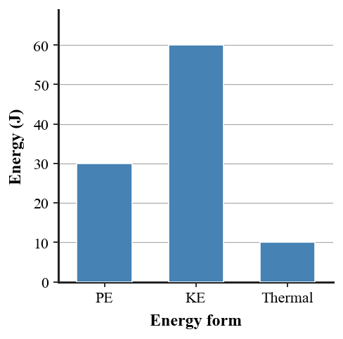

1. What does positive net work usually do to kinetic energy?
2. What does negative net work usually do to kinetic energy?
3. State the conservation-of-energy principle without using the word “disappears.”
4. Name the two main mechanical-energy forms emphasized in this unit.
5. When friction is included, what energy form often increases?
6. A 60 J total account has 15 J PE and 35 J KE. How much energy must be in other forms?
7. A pendulum has 80 J PE at one extreme. Ignoring losses, determine its KE at the lowest point.
8. A cart’s KE changes from 75 J to 25 J. Determine the net work and state whether it adds or removes motion energy.
9. Use the energy-account figure to compare the two states. Identify which form decreases, which increases, and whether the total remains consistent.

10. A 3 kg cart slows from 4 m/s to 2 m/s. Calculate the change in kinetic energy and state what must happen to that energy in a complete account.
11. A student says a coaster at the bottom “used up” its gravitational potential energy. Explain a better model using transformations and total conservation.
12. A wind turbine extracts energy from moving air. Explain why a complete model should show a change in the wind’s kinetic energy and include less-useful transfers such as thermal energy or sound.
13. If net work is positive, an object’s kinetic energy generally
14. Energy conservation allows individual energy forms to
15. A rough surface often increases
16. An ideal 70 J PE drop with no losses can produce a KE increase of
17. If KE falls by 20 J, net work is
18. A total of 200 J is split into 120 J mechanical and thermal energy. Thermal energy is
19. Which statement best explains “lost” mechanical energy?
20. A physically useful energy diagram should